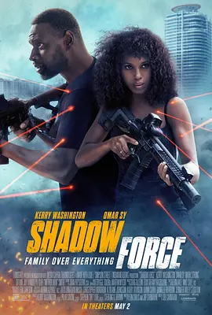

4.2
幽冥部队
Shadow Force
2025
美国
评分 4.2
导演:
乔·卡纳汉
演员:
凯丽·华盛顿 / 奥玛·希 / 贾里尔·卡马拉 / 马克·斯特朗 / 达明·乔伊·伦道夫
类型:
剧情,动作,惊悚
剧情简介
凯拉和大卫多年以“影子部队”精英特工的身份在世界暗处行动，对抗政变、破坏军阀、秘密护送目标，几乎没有他们处理不了的任务。然而无休止的战火逐渐磨损了两人的意志。当彼此的依赖变成明显的情感、再演变成被组织明令禁止的亲密关系，他们终于做出了最危险的决定——从黑暗中消失，伪造自己的死亡，开始作为普通夫妻的生活。在小镇的平静日子里，他们谨慎而克制地隐藏过去，抚养年幼的儿子，努力让家庭不被旧日阴影侵扰。但一个被忽视的细节突然暴露行踪，组织随即悬赏巨额酬金，派出熟悉他们每一个战术习惯的追击小组。夜间的公路传来低沉的引擎声，监控画面里出现陌生却专业的身影，凯拉和大卫立刻明白，他们再无退路。夫妻二人被迫重拾多年磨砺出的本能，以精确的判断和紧密的配合作为盾牌。他们在废弃工厂布下陷阱，在城市暗巷甩开追兵，也重新联络过去的盟友，一次次将敌人的攻势化为混乱。家庭的责任让每一次反击都带着急迫，而久违的默契在危险中愈发清晰。随着敌人不断逼近，他们必须直面过去的组织、旧日的伙伴以及那些被当作“资产”而非人的黑暗规则。逃亡与反击交织成高压的搏斗旅程，这个家庭在枪火与爆裂声中挣扎求生，试图冲破命运设下的包围圈。家庭的脆弱与战士的冷静交锋，使整段旅程充满紧张的矛盾与情感力量。